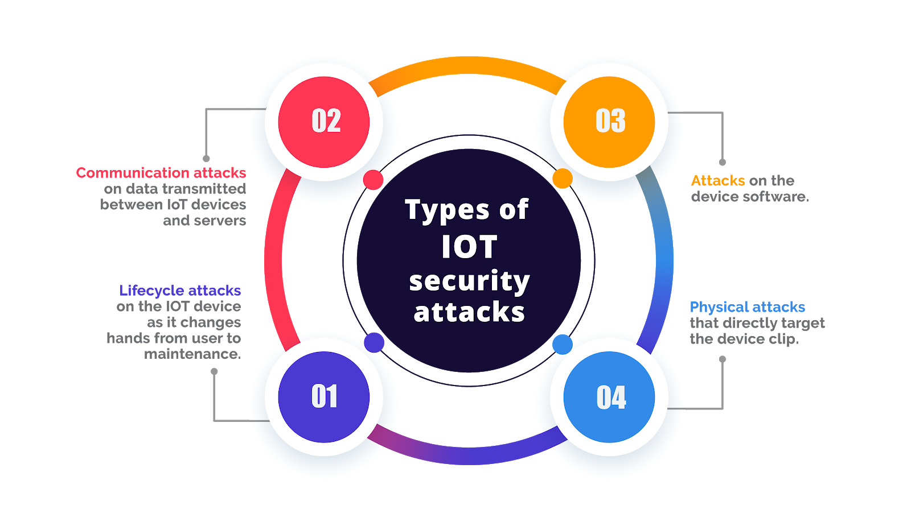

Introduction to IoT and Smart Homes
The Internet of Things (IoT) connects everyday devices to the internet for a smarter, more convenient home experience.
What are Smart Homes?
Smart Homes connect various devices to improve energy efficiency, security, and convenience. By using IoT technology, homes can be customized to fit unique needs and preferences.

Risks of IoT
With convenience comes risks. IoT devices can create security concerns, from data privacy issues to potential hacking vulnerabilities. Awareness and safety measures are key.
